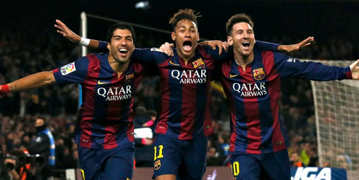

La Llegenda de la MSN: Messi, Suárez i Neymar
Entre els anys 2014 i 2017, el FC Barcelona va gaudir d’un dels tridents més letals de la història del futbol: Messi, Suárez i Neymar, coneguts com la MSN. Aquesta combinació explosiva va meravellar el món amb gols, assistències i una compenetració espectacular dins i fora del camp.
En la temporada 2014-2015, sota la direcció de Luis Enrique, la MSN va ser clau per aconseguir el triplet (Lliga, Copa del Rei i Lliga de Campions), una fita que només s’havia assolit una vegada abans en la història del club.
Aquella temporada, entre els tres van marcar 122 gols, una xifra rècord. Van destacar amb actuacions memorables, com la final de Champions a Berlín contra la Juventus o la victòria contra el Bayern de Guardiola a semifinals.
La química entre Messi, Suárez i Neymar va marcar una època daurada per al Barça i per al futbol mundial. Tot i que Neymar va marxar el 2017 al PSG, la seva etapa amb la MSN queda gravada com una de les millors de la història del club.